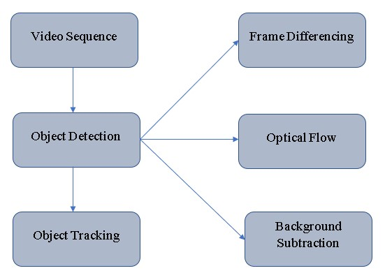

Projects
Fingerprint Detection
Used biometric solution for authentication on computerized systems and to verify the authenticity of one person by his fingerprint. The user provides his fingerprint together with his identity information like his ID number. The fingerprint verification system retrives the fingerprint template according to the ID number and matches the template with the real time acquired fingerprint from the user which is done using Image Processing (Matlab).


Object detection and Tracking
Object detection and tracking is the techniques that can be used to identify moving parts in a video. The process is frame differencing, colorspaces between two different videos, background seperation, Haar cascade classifiers for face detection, eye detection, nose detection and finally canny's edge detection is done using Image Processing OpenCV (Python).
License Plate Recognition using Python
The first step is to detect the license plate from the car. We will use the contour option in openCV to detect for rectangular object to find the number plate for license plate recognition. Character segmentation, once we have detected the license plate we have to crop it out and save it as a new image. Character recognition, new image that we obtain in the previous step is sure to have some Characters written using Image Processing OpenCV (Python).